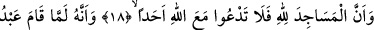
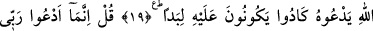
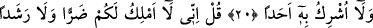
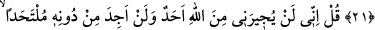
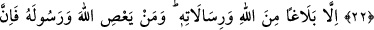
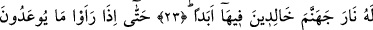
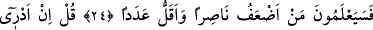
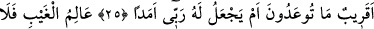
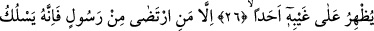
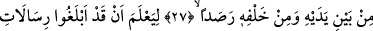
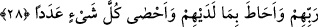
BEN ANCAK RABBİME YALVARIRIM
18. Mescidler şüphesiz Allah’ındır. O hâlde, Allah ile birlikte kimseye
yalvarmayın (ve kulluk etmeyin)!
19. Allah’ın kulu, O’na yalvarmaya (namaza) kalkınca, neredeyse onun etrafında
keçe gibi birbirlerine geçeceklerdi.
20. (Rasûlüm!) De ki: Ben ancak Rabbime yalvarırım ve O’na kimseyi ortak
koşmam.
21. De ki: Doğrusu ben (kendi başıma) size ne zarar verme ne de fayda sağlama
gücüne sâhibim.
22. De ki: Gerçekten (bana bir kötülük dilerse) Allah’a karşı beni kimse himâye
edemez, O’ndan başka sığınacak kimse de bulamam.
23. (Benim yaptığım) ancak Allah katından olanı, O’nun gönderdiklerini tebliğdir.
Artık kim Allah ve Rasûlü’ne karşı gelirse, bilsin ki ona, (kendi gibilerle birlikte)
içinde ebedî kalacakları cehennem ateşi vardır.
24. Sonunda, tehdid edilip durduklarını (azâbı, kıyâmeti) gördükleri zaman, kim
yardımcı olma bakımından daha güçsüz ve sayıca daha az imiş, bileceklerdir.
25. De ki: Tehdid edilegeldiğiniz (azap), yakın mıdır, yoksa Rabbim onun için uzun
bir süre mi koyar, ben bilmem.
26. O bütün görülmeyenleri bilir. Sırlarına kimseyi muttali kılmaz;
27. Ancak, (bildirmeyi) dilediği peygamber bunun dışındadır. Çünkü O, bunun